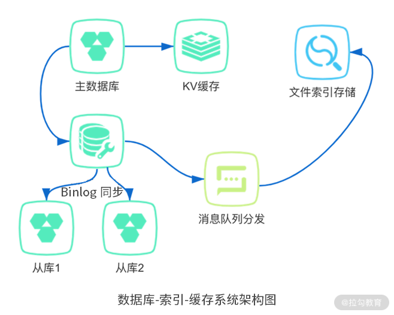
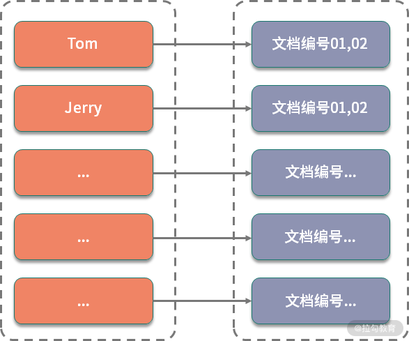

- 00 开篇词：搭建分布式知识体系，挑战高薪 Offer.md.html
- 01 如何证明分布式系统的 CAP 理论？.md.html
- 02 不同数据一致性模型有哪些应用？.md.html
- 03 如何透彻理解 Paxos 算法？.md.html
- 04 ZooKeeper 如何保证数据一致性？.md.html
- 05 共识问题：区块链如何确认记账权？.md.html
- 06 如何准备一线互联网公司面试？.md.html
- 07 分布式事务有哪些解决方案？.md.html
- 08 对比两阶段提交，三阶段协议有哪些改进？.md.html
- 09 MySQL 数据库如何实现 XA 规范？.md.html
- 10 如何在业务中体现 TCC 事务模型？.md.html
- 11 分布式锁有哪些应用场景和实现？.md.html
- 12 如何使用 Redis 快速实现分布式锁？.md.html
- 13 分布式事务考点梳理 + 高频面试题.md.html
- 14 如何理解 RPC 远程服务调用？.md.html
- 15 为什么微服务需要 API 网关？.md.html
- 16 如何实现服务注册与发现？.md.html
- 17 如何实现分布式调用跟踪？.md.html
- 18 分布式下如何实现配置管理？.md.html
- 19 容器化升级对服务有哪些影响？.md.html
- 20 ServiceMesh：服务网格有哪些应用？.md.html
- 21 Dubbo vs Spring Cloud：两大技术栈如何选型？.md.html
- 22 分布式服务考点梳理 + 高频面试题.md.html
- 23 读写分离如何在业务中落地？.md.html
- 24 为什么需要分库分表，如何实现？.md.html
- 25 存储拆分后，如何解决唯一主键问题？.md.html
- 26 分库分表以后，如何实现扩容？.md.html
- 27 NoSQL 数据库有哪些典型应用？.md.html
- 28 ElasticSearch 是如何建立索引的？.md.html
- 29 分布式存储考点梳理 + 高频面试题.md.html
- 30 消息队列有哪些应用场景？.md.html
- 31 集群消费和广播消费有什么区别？.md.html
- 32 业务上需要顺序消费，怎么保证时序性？.md.html
- 33 消息幂等：如何保证消息不被重复消费？.md.html
- 34 高可用：如何实现消息队列的 HA？.md.html
- 35 消息队列选型：Kafka 如何实现高性能？.md.html
- 36 消息队列选型：RocketMQ 适用哪些场景？.md.html
- 37 消息队列考点梳理 + 高频面试题.md.html
- 38 不止业务缓存，分布式系统中还有哪些缓存？.md.html
- 39 如何避免缓存穿透、缓存击穿、缓存雪崩？.md.html
- 40 经典问题：先更新数据库，还是先更新缓存？.md.html
- 41 失效策略：缓存过期都有哪些策略？.md.html
- 42 负载均衡：一致性哈希解决了哪些问题？.md.html
- 43 缓存高可用：缓存如何保证高可用？.md.html
- 44 分布式缓存考点梳理 + 高频面试题.md.html
- 45 从双十一看高可用的保障方式.md.html
- 46 高并发场景下如何实现系统限流？.md.html
- 47 降级和熔断：如何增强服务稳定性？.md.html
- 48 如何选择适合业务的负载均衡策略？.md.html
- 49 线上服务有哪些稳定性指标？.md.html
- 50 分布式下有哪些好用的监控组件？.md.html
- 51 分布式下如何实现统一日志系统？.md.html
- 52 分布式路漫漫，厚积薄发才是王道.md.html
28 ElasticSearch 是如何建立索引的？
前面讲到了 NoSQL 数据库的应用，在关系型数据库和 NoSQL 数据库之外，还有一类非常重要的存储中间件，那就是文件索引。当你在电商网站搜索商品，或者在搜索引擎搜索资料时，都离不开基于文件索引的各种检索框架的支持。
这一课时我们就一起来看下以 ElasticSearch 为代表的文件索引相关的知识。
ElasticSearch 简介
在讨论 ElasticSearch 之前，不得不提 Apache Lucene，因为 ElasticSearch 的广泛应用离不开 Lucene 的支持。
Lucene 是一个开源的全文检索引擎类库，支持各种分词以及搜索相关的实现，可以极大地简化搜索开发的成本，但 Lucene 只是一个工具包，在实际项目中进行二次开发，你需要非常熟悉 Lucene 的实现机制以及 API 应用，这样才能应用 Lucene 的各种特性。
现在有了 ElasticSearch，就可以直接使用基于 Lucene 的各种检索功能，ElasticSearch 是一个基于 Lucene 的分布式全文检索框架，在 Lucene 类库的基础上实现，可以避免直接基于 Lucene 开发，这一点和 Java 中 Netty 对 IO/NIO 的封装有些类似。
ElasticSearch 开放了一系列的 RESTful API，基于这些 API，可以快捷地实现各种搜索功能。另外一方面，除了搜索相关的功能，ElasticSearch 还对分布式场景下的应用有特别好的支持，包括良好的扩展性，可以扩展到上百台服务器的集群规模，以及近似实时分析的索引实现。这些特点，使得 ElasticSearch 在各类搜索场景、大数据分析等业务中广泛应用。
ElasticSearch 应用
ElasticSearch 对搜索的支持非常好，但是和 NoSQL 数据库一样，对事务、一致性等的支持较低。
下面是一个实际开发中，常见的数据库-索引-缓存系统架构图：

可以看到，ElasticSearch 一般是作为持久性数据库的辅助存储，是和 SQL & NoSQL 数据库一起使用，对外提供索引查询功能。关系型数据库保证数据更新的准确性，在关系型数据库更新以后，通过 binlog 同步结合消息队列分发的方式，来更新文件索引，提供一致性保证。
ELK stack
ElasticSearch 是由 Elastic 公司创建的，除了 ElasticSearch，Elastic 公司还有另外两款产品，分别是 Logstash 及 Kibana 开源项目，这三个开源项目组合在一起称为 ELK stack。
在 ELK 技术栈中，ElasticSearch 用于数据分析和检索，Logstash 用于日志收集，Kibana 用于界面的展示，ELK 可以用于快速查询数据并可视化分析，在日志处理、大数据等领域有非常广泛的应用。我在一个项目中曾经基于 ELK 部署过日志收集和告警系统，ELK 的文档和各种问题手册非常全面，可以说是开箱即用。
索引是如何建立的
ElasticSearch 存储的单元是索引，这一点区别于很多关系型数据库和 NoSQL 数据库，比如关系型数据库是按照关系表的形式组织数据，大部分 NoSQL 数据库是 K-Value 的键值对方式。
ElasticSearch 存储的基本单元是索引，那么索引是如何创建的呢？
ElasticSearch 索引的实现基于 Lucene，使用倒排索引的结构，倒排索引的引入，使得 ElasticSearch 可以非常高效地实现各种文件索引。倒排索引不光是在 ElasticSearch 等组件中应用，它还是百度等搜索引擎实现的底层技术之一。在搜索引擎中，索引的建立需要经过网页爬取、信息采集、分词、索引创建的过程，不过在 ElasticSearch 内部存储的实现中，数据的写入可以对比搜索引擎对网页的抓取和信息采集的过程，只需要关注分词和索引的创建。
分词和索引
分词是在索引建立中特别重要的一个环节，分词的策略会直接影响索引结果。Lucene 提供了多种分词器，分词器是一个可插拔的组件，包括内置的标准分词器， 也可以引入对中文支持较好的 IKAnalyze 中文分词器等。
下面我们通过一个例子来了解分词的具体过程，假设我们在 ElasticSearch 中新增了两个文档，每个文档包含如下内容：
- 文档1，Jerry and Tom are good friends.
- 文档2，Good friends should help each other.
英文是有单词的，单词之间通过空格进行拆分，所以对英文的分词相对容易，比如上面的内容，可以直接对字符串按照空格拆分，得到分词后的数组。
Jerry / / and / / Tom / / are / / good / / friends / . Good / / friends / / should / / help / / each / / other / .
如果是中文，除了标点符号以外，一个整句是没有分隔符的，处理起来就会复杂得多。一般来说，中文分词用得比较多的策略是基于字典的最长字符串匹配方式，这种策略可以覆盖大多数场景，不过还是有一小部分天然存在歧义的文档是无法处理的。比如「学生会组织各种活动」，按照最长串匹配的方式，可以切分成“学生会/组织各种活动”，但实际要表达的可能是“学生/会/组织各种活动”。
现在有一个很火热的学科叫作自然语言处理，研究的问题就包括如何消除语义分析中的各种歧义问题，感兴趣的同学可以去了解下。
建立索引
索引存储的结构是倒排索引，什么是倒排索引呢？倒排索引是相对于正排索引来说的，倒排索引描述了一个映射关系，包括文档中分词后的结果，以及分别包含这些单词的文档列表。
索引描述的其实就是关键词和文档的关系，正排索引就是“文档—关键词”的格式，倒排索引则相反，是“关键词—文档”的格式。可以看到，当需要使用关键词进行检索时，使用倒排索引才能实现快速检索的目的。
针对上面的分词示例，我们简单起见，统一为小写，把分词之后的单词组成一个不重复的分词列表，为了更好地进行查找，可以按照字典序排序。
and,are,each,friends,good,help,jerry,other,should,tom
比如，其中“friends”在文档 1 和文档 2 中都出现了，“Tom”和“Jerry”只在文档 1 中出现了 1 次，其他的单词也进行同样地处理，于是我们可以构建下面的倒排索引：
| 分词 | 文档列表 |
|---|---|
| ... | ... |
| friends | 文档 1，文档 2 |
| good | 文档 1，文档 2 |
| jerry | 文档 1， |
| tom | 文档 1 |
| ... | 以下省略 |
具体到数据结构的实现，可以通过实现一个字典树，也就是 Trie 树，对字典树进行扩展，额外存储对应的数据块地址，定位到具体的数据位置。

对比 B+ 树
MySQL InnoDB 引擎的索引实现是基于 B+ 树，那么同样是索引，倒排索引和 B+ 树索引有哪些区别呢？
严格地说，这两类索引是不能在一起比较的，B+ 树描述的是索引的数据结构，而倒排索引是通过索引的组织形式来命名的。比如我们上面的例子中，倒排指的是关键词和文档列表的结构关系。
对于数据库来说，索引的作用是提高数据查询的性能，考虑到磁盘寻址的特性，选择了 B+ 树作为索引的实现结构，可以更好地实现通过主键以及通过区间范围查找的要求。
对于倒排索引，则是对应具体的应用场景，我们在搜索中是通过一些关键词，定位到具体的文档。所以倒排索引实现的是根据关键词，也就是分词的结果，去查找文档，或者不同的网页。
总结
这一课时介绍了 ElasticSearch 存储组件及其应用，日志分析的三大件之 ELK 技术栈，以及倒排索引是如何实现的。
虽然 ElasticSearch 技术可以实现高效的检索，但是也带来了相应的部署以及一致性维护成本，在一些小型项目中，还是会用数据库模糊匹配的方式实现关键词检索。你可以思考一下，在你负责的项目中，是如何实现关键词检索的？欢迎留言分享。